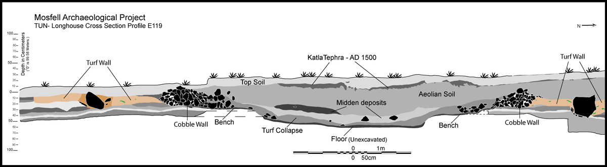
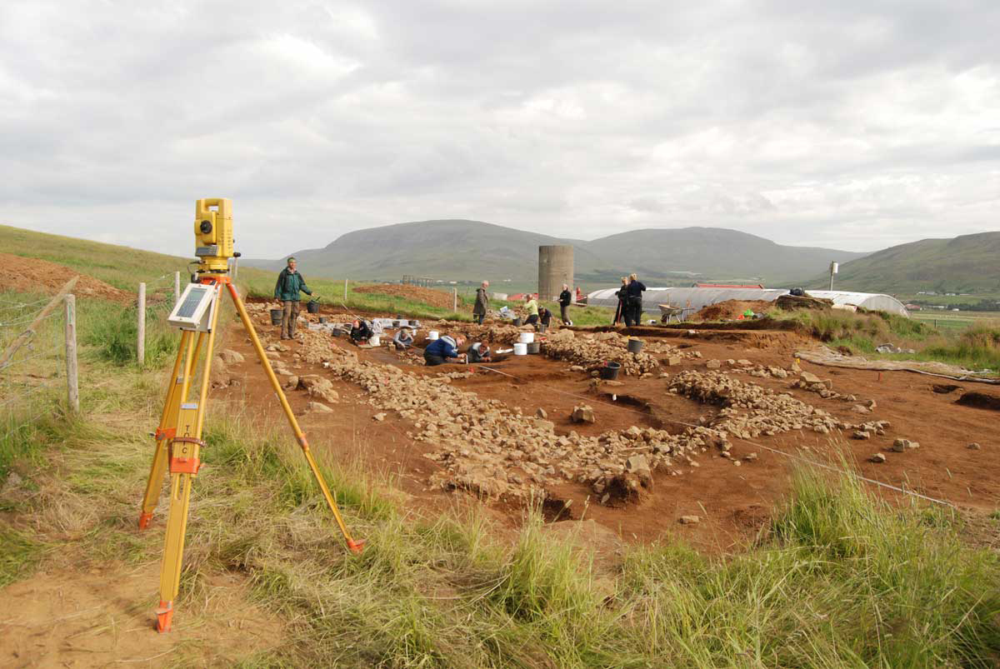
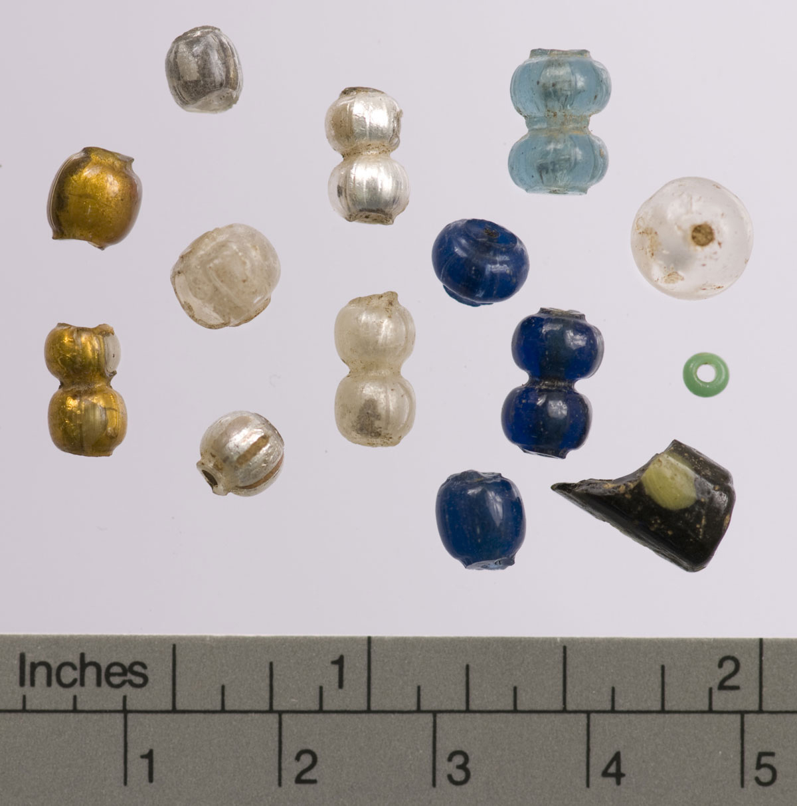
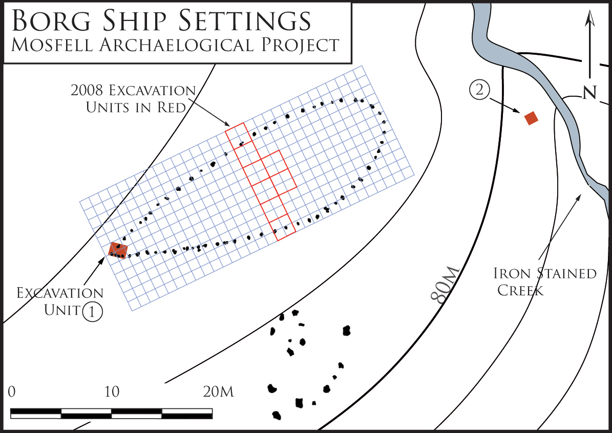
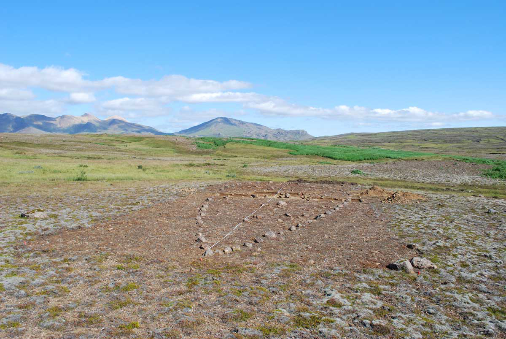
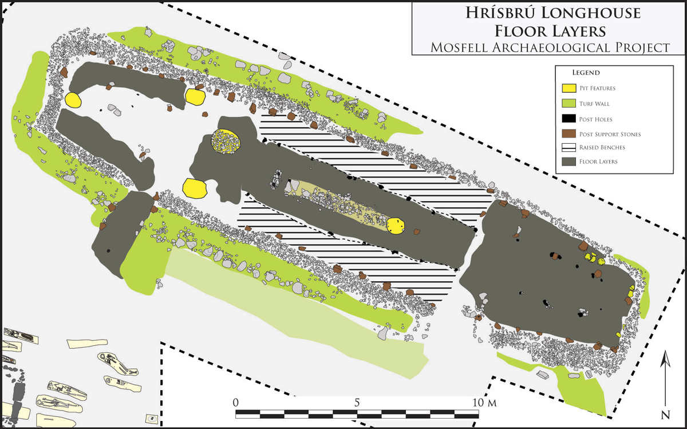
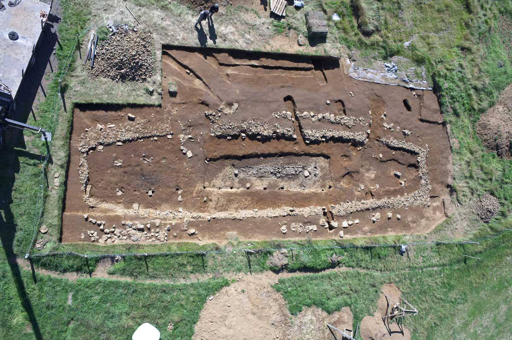

Archaeological Field Work | 2008 Field Season: Hrísbrú Longhouse Revealed
The Hrísbrú longhouse unearthed during the 2008 season is in many ways a classic Icelandic Viking Age longhouse with bow-sided walls built from turf and stone, a tripartite internal room division, and doors opposite ends of the long axis. On the other hand, the house is of an unusually large size and contained more high status finds than most other contemporary longhouses in Iceland. The house, having internal dimensions measuring 25 x 5 m, is one of the largest Icelandic longhouses. Furthermore, the 2008 excavations brought to light unusually clear remains of the superstructural support system in the longhouse that contribute substantial new evidence concerning Viking Age house construction.
In 2008, the excavation of the inside of the longhouse revealed the layout and organization of the house’s internal space. The house contained extremely well-preserved floor deposits, allowing for stratigraphic excavation of dozens of individual floor layers that revealed spatial and temporal differences in household activities. Each of these floor layers was excavated on a 1 m sample grid and 100% of the soil was sifted through a flotation machine for maximum artifact and ecofact recovery. The recovered finds show the comparative wealth of the Hrísbrú household and inform us about the economy of the farmstead.
A sampling grid of 1 x 1 m squares allow us to understand the distribution of even the smallest finds across the floors, thus providing high-resolution data on varying activity areas within the house. Soil chemistry samples from each of the 1 x 1 m squares of all floor layers and targeted micromorphological tests of the floors were also taken in 2008 to complete our understanding of the composition of the floors and use of the longhouse.
 A cross-sectional drawing of the Hrísbrú longhouse.
 The Hrísbrú longhouse under excavation.
 Viking Age beads from the Hrísbrú longhouse.
 A diagram showing ship-settings in the Mosfell Valley.
 A large ship-setting in the Mosfell Valley.
 Floor layers of the Hrísbrú longhouse rendered diagramatically.
 An aerial view of the Hrísbrú longhouse taken from a crane.